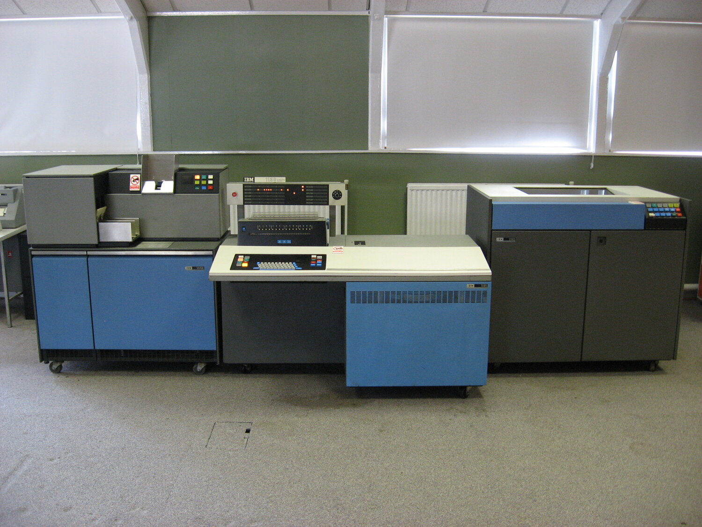
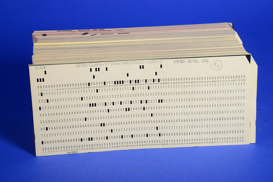
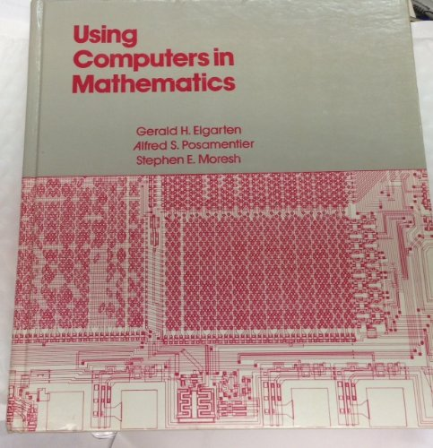
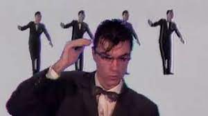

CS Ed in NYC
Mike Zamansky
zamansky@gmail.com
@zamansky
cestlaz.github.io
Hi
- NYC Public School Product K-12
- Goldman Sachs
- Seward Park / Stuyvesant
- Hunter
The Stone Age - 80s
- 1980s
- Hobbyists teaching
- Electives only
- Very few classes
- APCS (AB) in 1984


The Bronze Age

- CS as remedial math
- Some CS by hobbyists
- APCS split into A and AB
The Dark Ages

- A few pockets of excellence (nationwide)
- DOE not interested
The Renaissance
Today
- CS4All
- CSforNY
- DOE training
- Code.org, College Board, Ed Tech explosion
The Future
- CS Ed
- We need more than PD based solutions
- Shift to pre/in service programs
- But not all programs are created equal
- CS Teachers must take more control
- Watch out for the flavor of the month
- General Ed
- We must pay attention to Ed not just CS Ed
- We Must be careful not to devalue education as a whole
- Is it the subject or the student
Final Thoughts